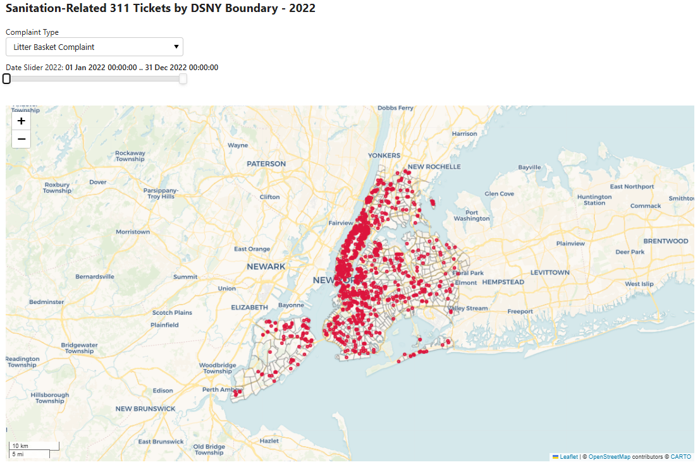
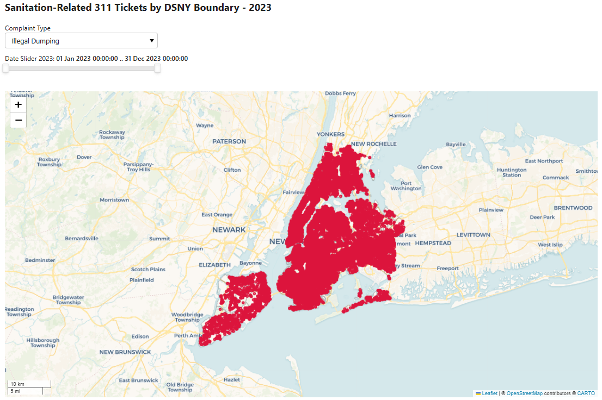
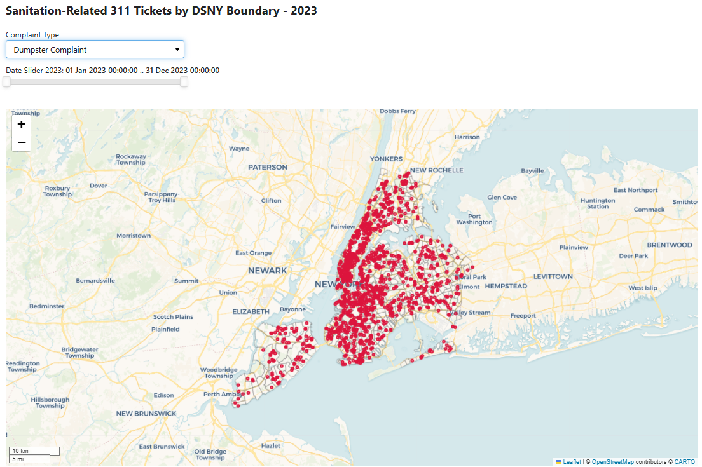

Code
import pandas as pd
import geopandas as gpd
import numpy as np
import datetime as dt
import folium
import xyzservices
import matplotlib.pyplot as plt
# Load panel and enable interactive features
import panel as pn
pn.extension()This section merges sanitation requests with DSNY trash-removal unit boundaries, and uses panel to visualize the temporal and spatial distribution of requests between 2022 and 2023.
import pandas as pd
import geopandas as gpd
import numpy as np
import datetime as dt
import folium
import xyzservices
import matplotlib.pyplot as plt
# Load panel and enable interactive features
import panel as pn
pn.extension()Point-level 311 sanitation complaints and DSNY units are merged to glimpse into the temporal and spatial distribution of the requests. To prepare the dataset, we loaded the 311 complaints and DSNY trash removal units, and reprojected them to the New York state plane before completing the merging.
DSNY defines its operational unit at multiple tiers. Areas in New York City is categorized into district, section, and frequency boundaries in descending order. For this report, we define DSNY unit per its definition of frequncy boundaries, which are the actual operational units for trash collection. Per this definition, there are 609 DSNY units in total. To distinguish and target those units, we created a new column “DSNY_ID” in the original boundary dataset.
source: DSNY Frequencies [https://data.cityofnewyork.us/City-Government/DSNY-Frequencies/rv63-53db/about_data]
# Load the Parquet file
complaints = pd.read_parquet('data/complaint_filtered.parquet')# Filter information needed
complaints_cols = ['Unique Key', 'Complaint Type', 'Location Type', 'Latitude', 'Longitude', 'Created Date']
complaints = complaints.loc[:, complaints.columns.isin(complaints_cols)]DSNY_boundary = gpd.read_file('data/DSNY Boundaries.geojson')
# reproject the boundaries
DSNY_boundary = DSNY_boundary.to_crs(epsg=2263)DSNY_boundary['DSNY_ID'] = DSNY_boundary['section'].astype(str) + "_" + DSNY_boundary['frequency'].astype(str)
# Filter information needed
DSNY_boundary = DSNY_boundary[['DSNY_ID', 'geometry']]Do not re-run：This chunk is used solely for data storage purposes.
DSNY_boundary.to_file("data/1_DSNY_boundary_processed.geojson", driver="GeoJSON")# Convert the complaints data to a GeoDataFrame
complaints_gdf = gpd.GeoDataFrame(
complaints, geometry=gpd.points_from_xy(complaints.Longitude, complaints.Latitude), crs="EPSG:4326"
)
# Convert the complaints data to the CRS EPSG=2263
complaints_gdf = complaints_gdf.to_crs(epsg=2263)
complaints_gdf["Unique Key"] = complaints_gdf["Unique Key"].astype(str)# Perform the spatial join
complaints_DSNY = gpd.sjoin(
complaints_gdf, DSNY_boundary, how="right", predicate="within").reset_index(drop=True)
# Drop the 'index_left' column
complaints_DSNY = complaints_DSNY.drop(columns=['index_left'])We created a panel tool to display sanitation-related complaints by type and date across all 609 DSNY units. While the actual panels are too large to be incorporated to this site, we encourage the users referring to “analysis/1-process-visualize-sanitation-request.ipynb” to construct the panels locally and interact with the tool.
In both years, the quantity of illegal dumping and dirty conditions significantly exceed litter basket complaint and dumpster complaint. Spatially, trash related complaints tend to cluster in Manhattan, Bronx, and Brooklyn, as compared to the other two boroughs. For Queens Borough, complaints tend to cluster in the south end as compared to the north.
Complaints also vary temporally. For instance, in 2022, illegal dumping becomes more frequeny in warmer seasons (the second and third quarter), and declines in colder seasons (the first and fourth quarter). This likely reflects lower temperature’s discouraging effect towards human activities and trashing.
# Create the widget for different complaint types
complaint_types = list(complaints_DSNY['Complaint Type'].dropna().unique())
complaint_type_select = pn.widgets.Select(
value="Litter Basket Complaint", options=complaint_types, name="Complaint Type"
)# Create time sliders for 2022 and 2023 separately
DEFAULT_START_1 = dt.datetime(2022, 1, 1)
DEFAULT_END_1 = dt.datetime(2022, 12, 31)
DEFAULT_START_2 = dt.datetime(2023, 1, 1)
DEFAULT_END_2 = dt.datetime(2023, 12, 31)
datetime_range_slider_2022 = pn.widgets.DatetimeRangeSlider(
name="Date Slider 2022",
start=DEFAULT_START_1,
end=DEFAULT_END_1,
value=(DEFAULT_START_1, DEFAULT_END_1),
step=1000 * 60 * 60 * 24, # 1 day in milliseconds
)
datetime_range_slider_2023 = pn.widgets.DatetimeRangeSlider(
name="Date Slider 2023",
start=DEFAULT_START_2,
end=DEFAULT_END_2,
value=(DEFAULT_START_2, DEFAULT_END_2),
step=1000 * 60 * 60 * 24, # 1 day in milliseconds
)# Define a function to filter the complaints data by complaint type
def filter_by_complaint_type(data, complaint_type):
"""
Filter data by complaint type.
"""
sel = data["Complaint Type"] == complaint_type
return data.loc[sel]
# Define a function to filter the complaints data by date range
def filter_by_date(data, start_date, end_date):
"""
Filter data by start and end date.
"""
# Convert complaints date column of strings to DateTime objects
created_date = pd.to_datetime(data["Created Date"])
## Two selections
sel_start = created_date >= start_date
sel_end = created_date <= end_date
## Logical "and" for final selection
date_sel = sel_start & sel_end
## Filter complaints by date range
return data.loc[date_sel]def plot_complaint_data(data, DSNY_boundary):
"""
Plot the complaint data and DSNY boundary on a Folium map.
"""
# Plot the DSNY boundary
DSNY_boundary = DSNY_boundary.to_crs(epsg=4326)
m = DSNY_boundary.explore(
style_kwds={"weight": 0.5, "color": "gray", "fillColor": "none"},
name="DSNY boundary",
tiles=xyzservices.providers.CartoDB.Voyager,
)
complaints_df = data.drop(columns='geometry')
complaints_df = complaints_df.dropna(subset=['Longitude', 'Latitude'])
complaints_df['Created Date'] = complaints_df['Created Date'].astype(str)
points = gpd.GeoDataFrame(
complaints_df,
geometry=gpd.points_from_xy(complaints_df['Longitude'], complaints_df['Latitude']),
crs="EPSG:4326",
)
# Overlay all points as circle markers on the map
points.explore(
m=m,
marker_kwds={"radius": 2, "fill": True, "color": "crimson"},
marker_type="circle_marker", # Options: 'circle_marker', 'marker'
name="Complaints",
)
return mdef create_dashboard(complaint_type, date_range, DSNY_boundary):
"""
Plot trash-related requests for the input neighborhood.
"""
# Step 1: Filter the complaints data by input complaint type and time
complaints = filter_by_complaint_type(complaints_DSNY, complaint_type)
complaints = filter_by_date(complaints, date_range[0], date_range[1])
# Step 2: Make the Folium map
m = plot_complaint_data(complaints, DSNY_boundary)
# Step 3: Return a Folium pane
return pn.pane.plot.Folium(m, height=600)The dashboard generated by panel is unable to display in the website rendered by quarto and also too large to be uploaded to github if deployed. Please refer to and download from complaints dashboard 2022 [https://drive.google.com/file/d/1_Ao6Zl_NZtixNh9ZPs9ACPVRR6Jr8Jo1/view?usp=sharing] for the panel visualization.
# Create the dashboard for 2022
complaint_dashboard_2022 = pn.Column(
# Top: the title and dropdown widget
pn.Column(
"## Sanitation-Related 311 Tickets by DSNY Boundary - 2022",
complaint_type_select,
datetime_range_slider_2022,
),
# Add a height spacer
pn.Spacer(height=25),
# Bottom: the main chart, bind widgets to the function
pn.bind(
create_dashboard,
DSNY_boundary=DSNY_boundary,
complaint_type=complaint_type_select,
date_range=datetime_range_slider_2022,
),
)
complaint_dashboard_2022.save("complaint_dashboard_2022.html", embed=True)
# complaint_dashboard_2022 # hidden to reduce notebook size 
The dashboard generated by panel is unable to display in the website rendered by quarto and also too large to be uploaded to github if deployed. Please refer to and download from complaints dashboard 2023 [https://drive.google.com/file/d/1QsHRyEgokmOp9xgAQjU-84xuU6cgTu3n/view?usp=sharing] for the panel visualization.
# Create the dashboard for 2023
complaint_dashboard_2023 = pn.Column(
# Top: the title and dropdown widget
pn.Column(
"## Sanitation-Related 311 Tickets by DSNY Boundary - 2023",
complaint_type_select,
datetime_range_slider_2023,
),
# Add a height spacer
pn.Spacer(height=25),
# Bottom: the main chart, bind widgets to the function
pn.bind(
create_dashboard,
DSNY_boundary=DSNY_boundary,
complaint_type=complaint_type_select,
date_range=datetime_range_slider_2023,
),
)
complaint_dashboard_2023.save("complaint_dashboard_2023.html", embed=True)
# complaint_dashboard_2023 # hidden to reduce notebook size 

Per the goal of the final product, we grouped and counted the total trash-related complaints for each DSNY boundary by day. This dataframe is saved for later analysis use.
complaints_DSNY_grouped = (
complaints_DSNY.groupby(['DSNY_ID', 'Created Date'])['Unique Key']
.nunique()
.reset_index()
)
complaints_DSNY_grouped.rename(columns={'Unique Key': 'Complaint Count'}, inplace=True)Creating a full DSNY-unit/date panel: Acknowleding records are missing for DSNY units on the day where no complaints are filed, we created a full DSNY-unit/date panel, to obtain a complete dataframe where no records is coded as zero. This approach ensures a comprehensive dataset that captures both active complaint days and periods of no activity, enabling more accurate analysis.
# Generate the full date range
date_range = pd.date_range(start="2022-01-01", end="2023-12-31")
# Get unique DSNY units
unique_IDs = DSNY_boundary['DSNY_ID'].unique()
# Create a dataframe with all DSNY unit-date combinations
full_panel = pd.MultiIndex.from_product(
[unique_IDs, date_range], names=['DSNY_ID', 'Created Date']
).to_frame(index=False)
# Merge the full data with the original dataframe
complaints_DSNY_grouped['Created Date'] = pd.to_datetime(complaints_DSNY_grouped['Created Date'], errors='coerce')
complaints_DSNY_full = pd.merge(
full_panel,
complaints_DSNY_grouped,
on=['DSNY_ID', 'Created Date'],
how='left'
)
# Fill missing complaint count with 0
complaints_DSNY_full['Complaint Count'] = complaints_DSNY_full['Complaint Count'].fillna(0)
# Sort by unit and date
complaints_DSNY_full = complaints_DSNY_full.sort_values(by=['DSNY_ID', 'Created Date']).reset_index(drop=True)# Filter for 2022
complaints_DSNY_full_2022 = complaints_DSNY_full[complaints_DSNY_full['Created Date'].dt.year == 2022]
# Filter for 2023
complaints_DSNY_full_2023 = complaints_DSNY_full[complaints_DSNY_full['Created Date'].dt.year == 2023]complaints_DSNY_full_2022.to_parquet('data/1_complaints_DSNY_full_2022.parquet', index=False)
complaints_DSNY_full_2023.to_parquet('data/1_complaints_DSNY_full_2023.parquet', index=False)